Ofnuts의 경로 도구 테스트
기본 편집 기능
ofn-path-edits/ofn-path-edits.py
경로 창 문맥 메뉴: Ofnuts/Edit
설명서: ofn-path-edits/ofn-path-edits.html
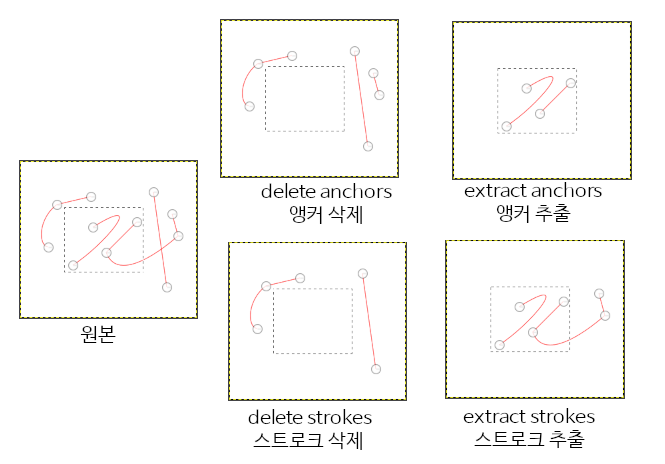
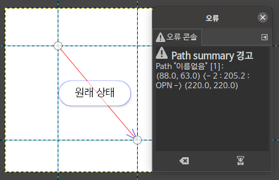 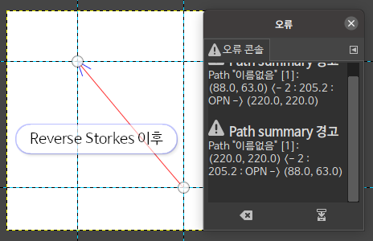
앵커는 클릭이나 Shift+클릭으로 선택함.
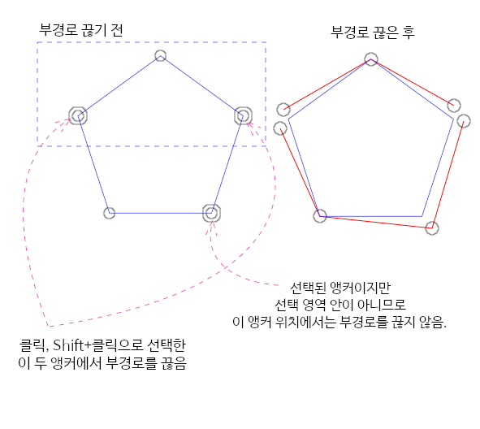
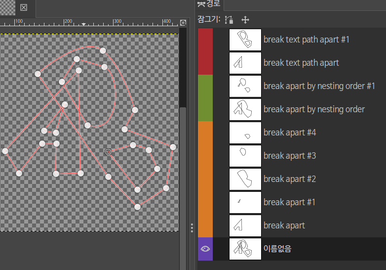
오류 콘솔 창(도킹가능한 대화창/오류 콘솔)이 열려 있으면 오류 콘솔 창에, 아니면 따로 대화상자에 표시.
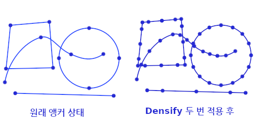
Mirror Path(경로 거울면 대칭)
현재 경로를 선대칭(경면대칭)한 경로를 생성
path-mirror-0.0.py
경로 창 문맥 메뉴: Ofnuts/Tools/Mirror path...
Morror path 대화창
Orientaion: Horizontal(수평). 가로 방향으로 대칭하게 만들기 (세로선 선대칭).
Orientaion: Vertical(수직). 세로 방향으로 대칭하게 만들기 (가로선 선대칭).
Axis : 대칭축 위치(정수) (가로 방향이면 가로(X) 위치, 세로 방향이면 세로(Y) 위치)
Merge with source: 원본 경로를 복사해서 선대칭한 경로에 합치기
Merge down(아래로 합치기)
ofn-path-merge-down/ofn-path-merge-down.py
경로 창 문맥 메뉴: Ofnuts/Merge down
현재 경로 아래의 경로에 현재 경로를 합침
아래쪽 경로의 이름이 유지됨.
Generate intermediate paths(중간 경로 생성)
ofn-path-inbetweener/ofn-path-inbetweener.py
경로 창 문맥 메뉴: Ofnuts/Tools/Generate intermediate paths
앵커 수와 순서가 같은 두 개의 경로를 이용해 중간 단계의 경로들을 만듦
- Output
- Single: 중간 단계 경로를 하나의 경로로 합침
- Multiple: 중간 단계 경로를 각각 하나의 경로(경로 레이어)로 만듦
- Auto: 경로의 스트로크(부경로)가 하나뿐이면 경로 하나, 여러 개이면 여러 경로를 만듦
- Stretch
- Linear: 중간 단계 경로들의 간격이 같음
- Accelerate: 중간 단계 경로들의 간격이 점점 커짐
- Decelerate: 중간 단계 경로들의 간격이 점점 좁아짐
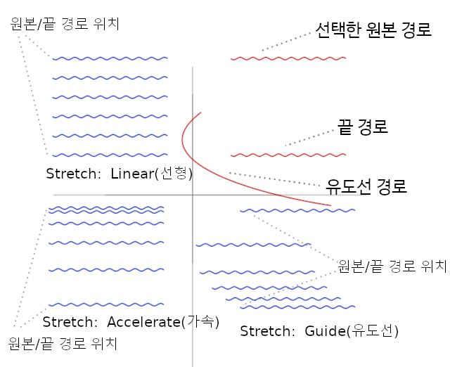
Bend(구부리기)
ofn-bend-path/ofn-bend-path.py
경로 창 문맥 메뉴: Ofnuts/Tools/Bend...
설명서: ofn-bend-path/ofn-bend-path.html
부 경로가 정확히 2개(위쪽과 아래쪽)인 봉투 경로(envolope path)대로 경로의 상하 폭을 조정
- Envelope path(봉투 경로)
- 가로 폭은 원본 경로와 같거나 넓어야 함. 경로의 방향이나 앵커 개수는 상관 없음.
- Bendiness(휨)
- 직선 부경로의 앵커(노드)에서 끌어낼 핸들(접선 조절점) 길이의 비율.
- reference lines(기준 선): 원본 경로의 위쪽 기준선, 아래쪽 기준선을 결정하는 방식 선택
- Best fit: 자동으로 결정
- Guides: 안내선 두 개로 결정
- Explicit values: y좌표를 직접 입력
- Top coordinate(상단 좌표)
- y (세로) 좌표. 원본 경로의 위쪽 기준선
- Bottom coordinate(하단 좌표)
- y (세로) 좌표. 원본 경로의 아래쪽 기준선
구부린 경로는 봉투 경로 위치에 생성됨.
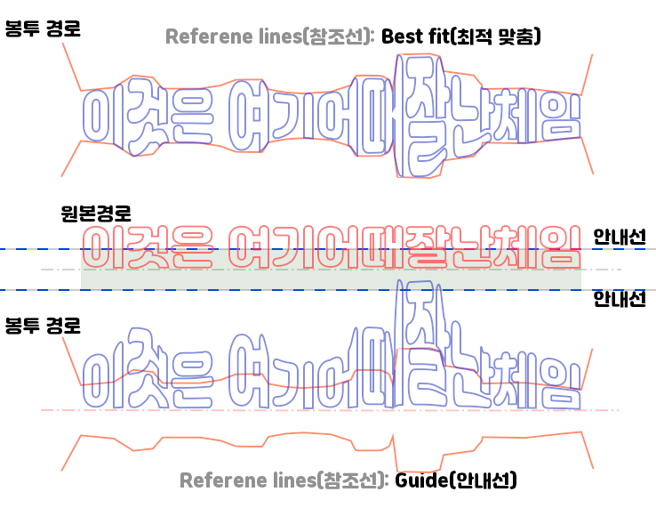
 |
봉투 경로 10개를 Generate intermediate paths로 생성 Denisify anchors로 앵커 개수 늘림. 봉투 경로를 바꾸면서 Bend 적용. Break path apart, '보이는 경로 합치기', '경로를 선택으로' 등을 활용. layerfx28.py의 stroke 효과로 테두리 그리기 레이어의 폭을 크키 조정 도구로 변경 animstack 태그를 적절히 이용해서 마무리. bendpath-demo.xcf |
Dial marks(다이얼 눈금)
ofn-dial-marks/ofn-dial-marks.py"
메뉴: 필터/Ofnuts/Render/Paths/Dial marks
설명서: ofn-dial-marks/ofn-dial-marks.html
다이얼 마크(간격이 규칙적인 원반 섹터;시계판 눈금 같은 것) 모양의 경로를 만듦
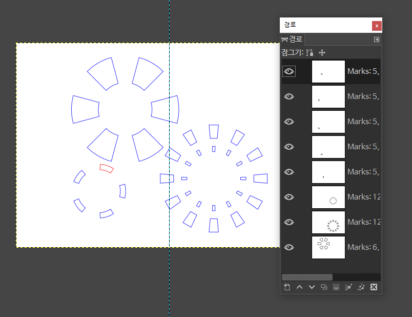
Fit canvas to path(캔버스를 패스에 맞추기)
ofn-fit-canvas-to-path/ofn-fit-canvas-to-path.py
메뉴: Image/Ofnuts/Fit canvas to path/
Tight
With margin...
설명서: ofn-fit-canvas-to-path/ofn-fit-canvas-to-path.html
경로 크기에 맞게 캔버스를 키우거나 줄임
Gradient along path(경로를 따라 그레이디언트)
ofn-gradient-along-path/ofn-gradient-along-path.py
설명서: ofn-gradient-along-path/ofn-gradient-along-path.html
경로 창 문맥 메뉴: Ofnuts/Decorate/Gradient along path...
경로에 걸쳐 직교 방향으로 이중선형 그레이디언트를 그림. (Gimp 2.10 필요함)
그레이디언트의 투명도는 무시하고 완전히 불투명하게 그림.
옵션
- Precision(정밀도): Very Fine, Fine, Rough,Coarse 각각 0.5, 1, 2, 5 픽셀씩 폭을 줄이면서 그림.
Jigsaw pattern(직소 무늬)
ofn-jigsaw/ofn-jigsaw.py
메뉴: 필터/렌더/Paths/Jigsaw pattern
설명서: ofn-jigsaw/ofn-jigsaw.html
직소 퍼즐 패턴 모양의 경로를 만듦
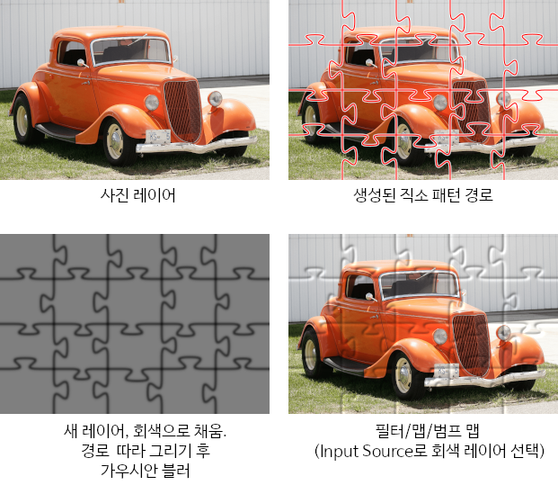
Path animation(경로 움직그림)
ofn-path-animation/ofn-path-animation.py
경로 창 문맥 메뉴: Render/Path animation
설명서: ofn-path-animation/ofn-path-animation.html
경로를 따라 칠하기 움직그림을 만듦.
옵션
- Stroke processing(부경로 처리)
- Sequential(연속): 부 경로 하나씩 그리기
- Parallel, same speed(평행, 동일 속도): 모든 부경로를 동시에, 같은 속도로 그리기
- Parallel, same duration(평행, 동일 지속시간): 모든 부경로를 동시에, 같은 시간 안에 그리기
- Background Fill(배경 채우기)
- Foreground color: 전경색
- Background color: 배경색
- White: 흰색
- Transparent: 투명
- Pattern: 패턴. '도킹 가능한 대화창/패턴' 창에서 선택한 패턴
- Layer name: 레이어 이름 패턴
레이어 이름 패턴에 사용되는 특수 용어 (중괄호까지 포함)
- {pathName}: 원본 경로(경로 창 안의) 이름
- {count}: 전체 단계 수
- {step}: 1부터 시작하는 단계 번호
Python 문자열의 format 메소드와 같은 형식. 예를 들어, {step:03d}는 앞에 0을 붙여서 3 자리로 맞춤.
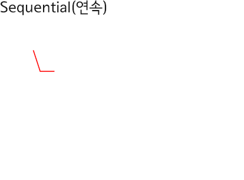 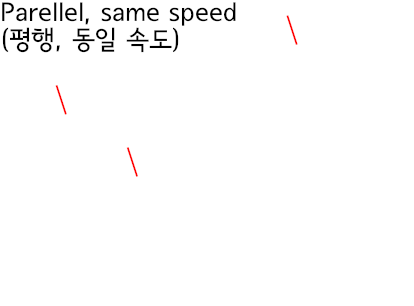 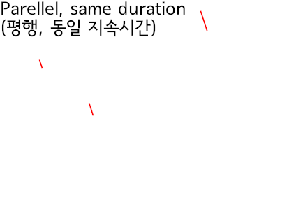
Filter strokes on size(크기에 따라 부경로 거르기)
ofn-path-filter-strokes/ofn-path-filter-strokes.py
경로 창 문맥 메뉴: Tools/Filter strokes on size
짧은 설명: 크기 준거(앵커 수, 둘레 길이, 면적)을 사용하여 경로 안의 부경로 유지/제거
설명서: ofn-path-filter-strokes/doc/ofn-path-filter-strokes.html
Threshold 옵션에 지정한 크기와 같은 부경로만 남긴 경로를 만듦
Marquee animation(광고등 움직그림)
ofn-path-marquee/ofn-path-marquee.py
경로 창 문맥 메뉴: Ofnuts/Render/Marquee animation
설명서: ofn-path-marquee/ofn-path-marquee.html
경로를 따라 무비 마키(영화관 입구 위 광고등) 스타일의 움직그림을 만듦
- Period length: 대시+공간 단위의 길이. (닫은 부경로에서 약간 변경될 수 있음)
- Ratio: 대시+공간 단위에서 대시 길이의 비율. (캡 스타일에 따라 길어질 수 있음)
- Steps: 움직그림 레이어 수.
- Line width: 선의 너비. 픽셀 단위.
- Layer Name: 레이어 이름 패턴
레이어 이름 패턴에 사용되는 특수 용어 (중괄호까지 포함)
- {pathName}: 원본 경로(경로 창 안의) 이름
- {count}: 전체 단계 수
- {step0}: 0부터 시작하는 단계 번호
- {step1}: 1부터 시작하는 단계 번호
- {period}: 대시+공간의 길이. 픽셀 단위
- {ratio}: 주기(대시+공간)에서 대시의 비율. (1부터 99까지)
Python 문자열의 format 메소드와 같은 형식. 예를 들어, {step:03}는 앞에 0을 붙여서 3자리로 맞춤.
Path rungs(경로 가로장)
ofn-path-rungs/ofn-path-rungs.py
경로 창 문맥 메뉴: Tools/Path rungs/By spacing
경로 창 문맥 메뉴: Tools/Path rungs/By count
설명서: ofn-path-rungs/ofn-path-rungs.html
두 경로 사이에 지정한 개수 또는 간격으로 선을 만듦
경로 가로장 Sides 옵션
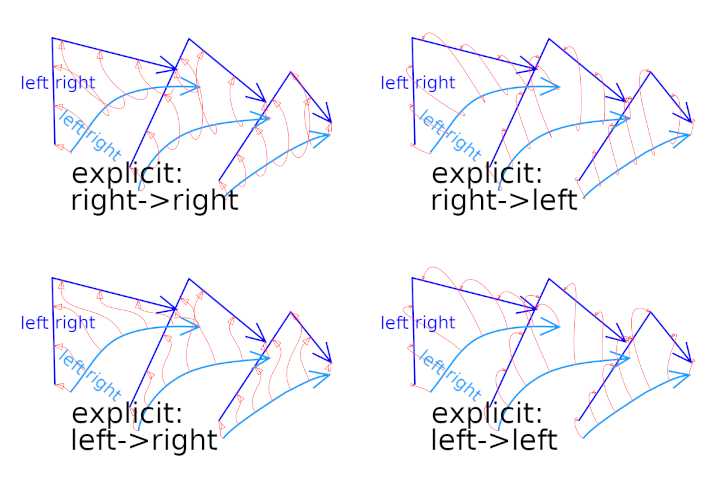
Generate envelope of two paths(두 경로를 감싸는 선택 영역 만들기)
ofn-paths-envelope/ofn-paths-envelope.py
경로 창 문맥 메뉴: Tools/Generate envelope of two paths
짧은 설명: 두 경로와 그 사이의 모든 것을 포함하는 선택 영역을 만듦
html 문서: 없음
두 경로를 지나가는 guide path를 지정하면 그 경로를 따라가면서 선택 영역을 늘려 나감(느림)
Selection from visible paths(모든 보이는 경로로 선택)
ofn-paths-to-selection/ofn-paths-to-selection.py
메뉴: Select/Ofnuts/Selection from visible paths
짧은 설명: 모든 보이는 경로를 선택한 것의 합집합인 선택 영역을 만듭니다.
Shapes(도형)
ofn-path-to-shape/ofn-path-to-shape.py
경로 창 문맥 메뉴: Ofnuts/Shapes/On strokes 메뉴 아래
Circle(원), Star(별), Polygon(다각형), Rounded Polygon(둥근 다각형), Rectangle(사각형), Line(선)
경로 창 문맥 메뉴: Various/Tangent 메뉴 아래
Tangets between circles
Tangets to circle from points
경로 창 문맥 메뉴: Ofnuts/Shapes/On segments 메뉴 아래
Circle, Star, Polygon, Rounded Polygon, Rectangle, Line
짧은 설명: 기존 경로 안의 부경로를 이용하여 기하학적 도형(원, 별, 다각형 등등)을 만듦
설명서: ofn-path-to-shape/doc/ofn-path-to-shape.html
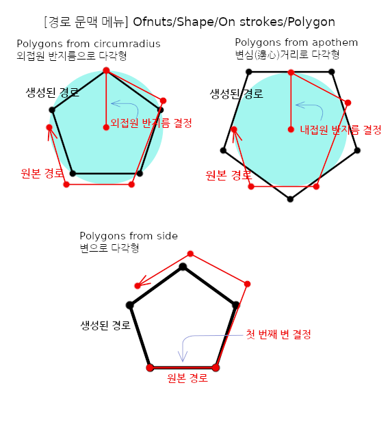
(On stroke/Circle) Circumcircle, Crosshair
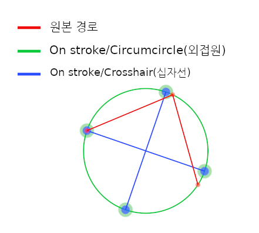
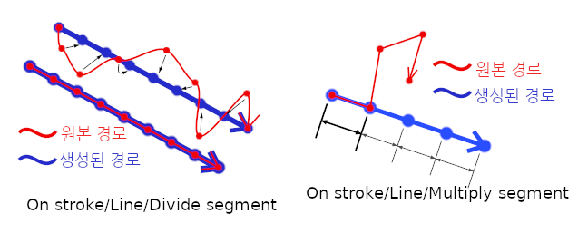
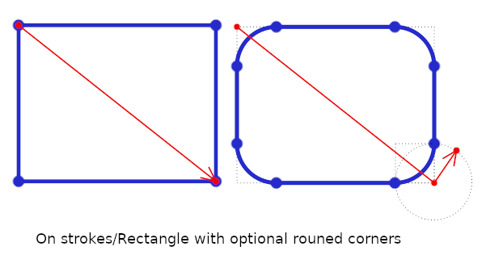
(On strokes/Polygon/Rounded Polygon) Polygon from Circumradius, Polygon from Apothem
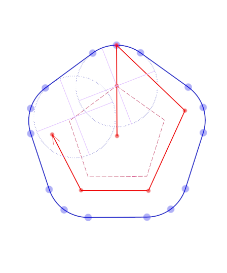
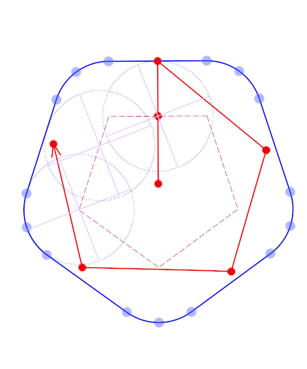
(On strokes/Star) Star, Double star
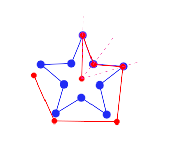
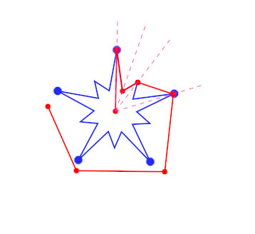
(On strokes/Star) Spoke, Star, Double Star
 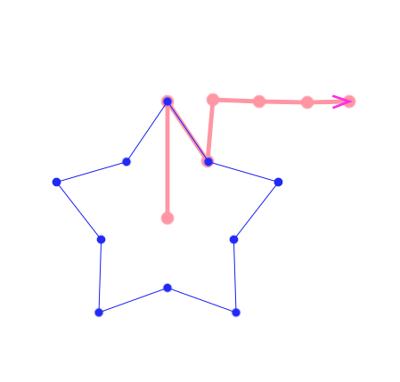
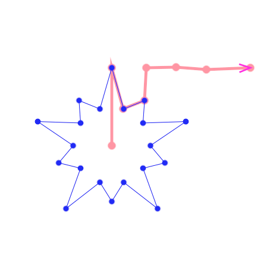
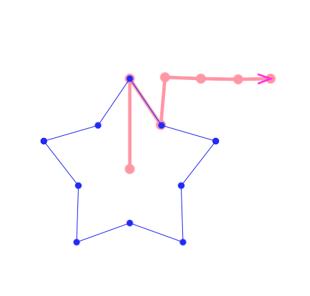
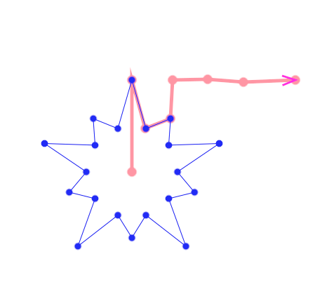
(On segments/Circles)
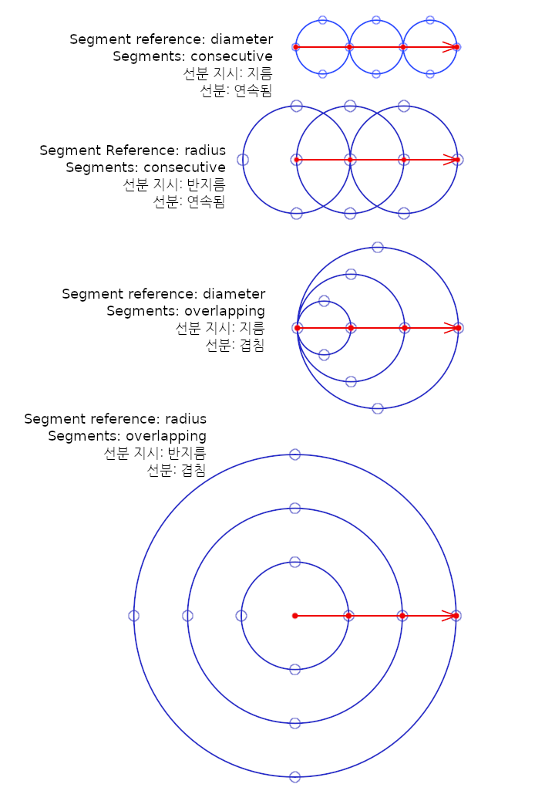
(On segments/Modify Segments)
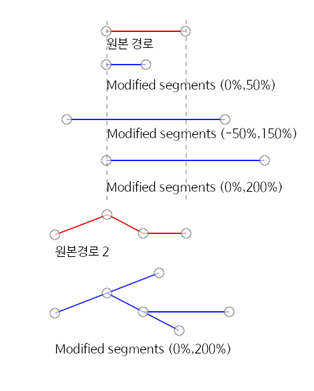
(Shapes/Various/tangents from cirles)
현재 경로의 부경로 두 개가 원의 반지름을 나나낼 때
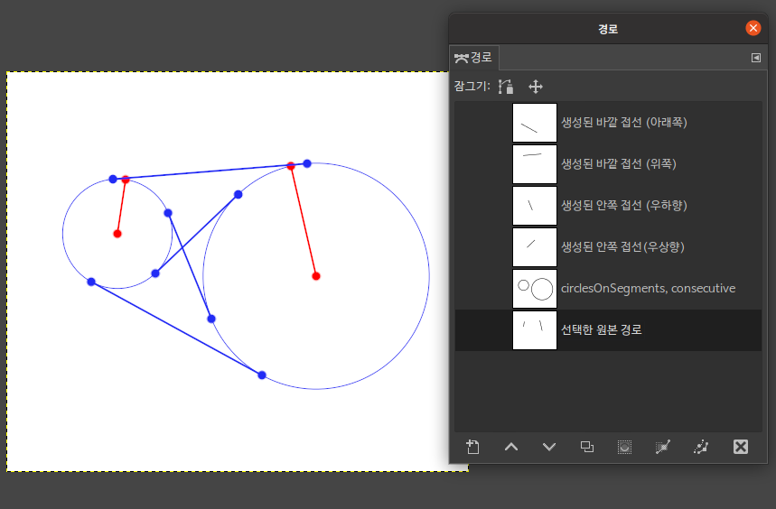
현재 경로의 부경로가 두 개가 원주 위의 세 점을 가리킬 때
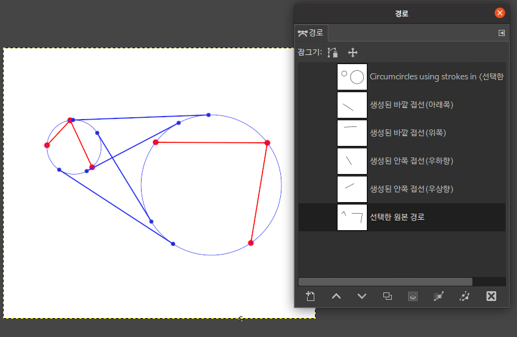
(Shapes/Various/tangents from points)
현재 경로가 반지름 또는 원주 위 세 점을 가리키고 부경로 하나뿐이고, 링크된 경로의 앵커 각각이 접선의 시작점을 나타낼 때.
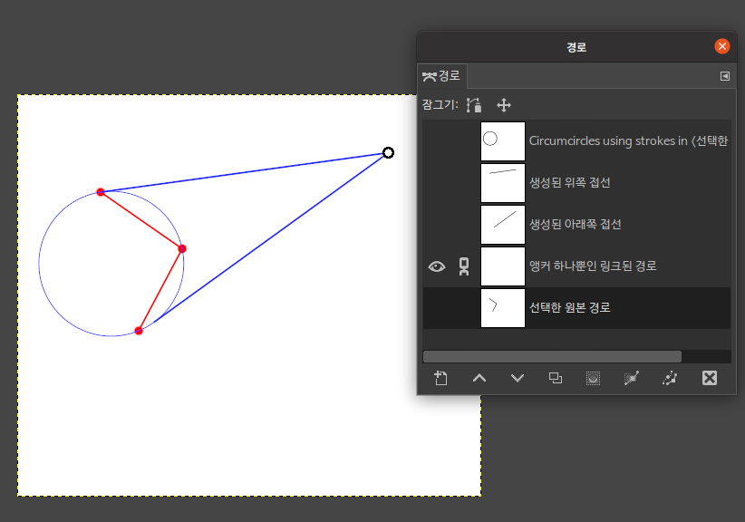
경로에 부경로가 여러 개 있으면 첫 번째 부경로가 원의 반지름 또는 원주 위 세 점을 가리키고,
다른 부경로의 앵커 각각이 접선의 시작점을 나타냄.
Remove small tangents(작은 접선 제거)
ofn-remove-tangents/ofn-remove-tangents.py
경로 창 문맥 메뉴: Tools/Remove small tangents
짧은 설명: 경로 안의 작은 접선(노드 핸들)을 제거
Mass render(집단 렌더링)
ofn-stroke-fill-paths/ofn-stroke-fill-paths.py
경로 창 문맥 메뉴: Ofnuts/Render/Mass render 메뉴 아래
Fill paths(경로 안 채우기)
Paint along paths(경로 따라 긋기)
짧은 설명: 선긋기/채우기로 모든 보이는 경로를 그려 냅니다.
Text along path(경로 따라 텍스트)
ofn-text-along-path.py/ofn-text-along-path.py
경로 창 문맥 메뉴: Ofnuts/Tools
Text along path...
Text (multi) along path...
짧은 설명: 경로를 따라 텍스트를 구부립니다
설명서: ofn-text-along-path/Doc/ofn-text-along-path.html(번역)
레이어 메뉴의 '경로 따라 텍스트'는 텍스트 레이어가 대상.
이 플러그인은 플러그인 대화창에서 직접 텍스트를 입력하고, 글꼴도 그 창 안에서 지정함.
김프의 자체 '경로 따라 텍스트'보다 더 많은 옵션 제공.
Text path to selection(텍스트 경로를 선택 영역으로)
ofn-text-path-selection/ofn-text-path-selection.py
경로 창 문맥 메뉴: Ofnuts/Text path to selection
짧은 설명: creates a selection from a text path, where overlap areas are selected
설명서: ofn-text-path-selection/ofn-text-path-selection.html
텍스트 경로에서 선택 영역을 만듭니다. 이때 글자가 겹치는 부분도 선택에서 제외되지 않게 합니다
Truchet pattern(트뤼셰 패턴)
ofn-truchet-path/ofn-truchet-path.py
메뉴: Filters/Ofnuts/Render/Paths/Truchet pattern
짧은 설명: creates a Truchet pattern
설명서: ofn-truchet-path/ofn-truchet-path.html
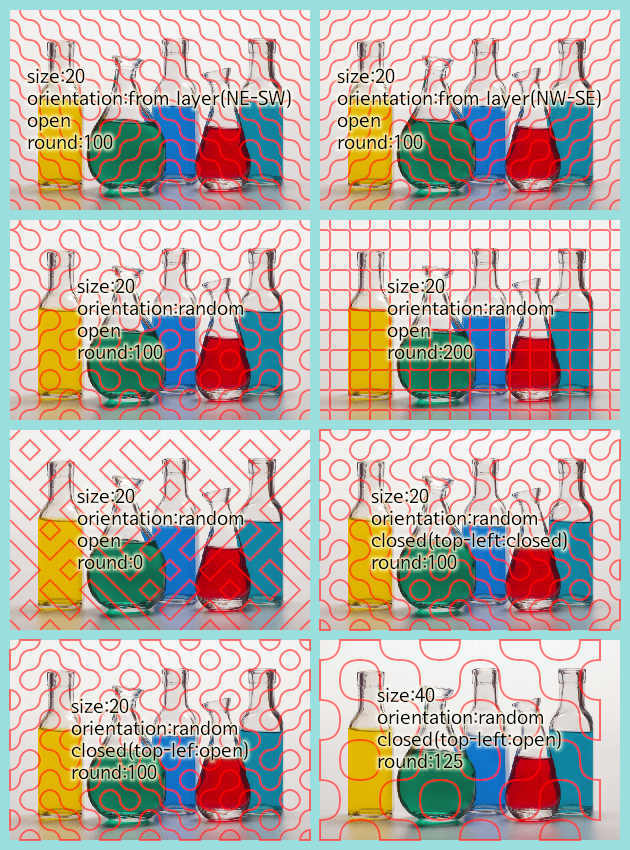
Golden Spiral on selection(선택 상에 황금비 나선)
golen-spiral-0.0.py
메뉴: 선택/Ofnuts/Golden spiral on selection
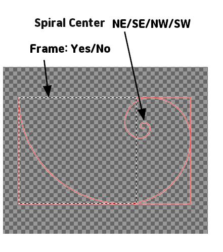
Decorate/Neon(장식/네온)
neon-path-0.2.py
경로 창 문맥 메뉴: Ofnuts/Decorate/Neon
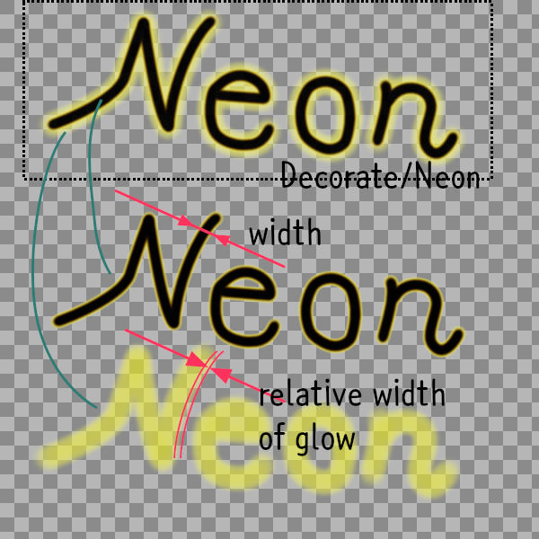
사용되는 색
- 어두운 색 : 현재 그레이디언트의 오른쪽 끝 단색 (FG BG 그레이디언트 제외)
- 밝은 색: 현재 그레이디언트의 왼쪽 끝 색 (FG BG 그레이디언트 제외)
Arrow heads(화살촉)
path-arrow-heads-0.0.py
경로 창 문맥 메뉴: Ofnuts/Decorate/Arrow heads...
짧은 설명: None
설명서: None
Import CSV, Export CSV(CSV 들여오기, 내보내기)
path-csv-0.1.py
경로 창 문맥 메뉴: Ofnuts/Tools/CSV 메뉴 아래
Import CSV
Export CSV
짧은 설명: None
설명서: http://gimp-path-tools.sourceforge.net/tools.shtml#path-csv
Dump
path-dump-0.1.py
경로 창 문맥 메뉴: Ofnuts/Tools/Dump
설명서: http://gimp-path-tools.sourceforge.net/tools.shtml#path-dump
콘솔(터미널)에 경로 내용을 출력
리눅스: 김프를 터미널에서 시작해야함.
윈도스: 김프를 gimp-console로 시작해야 함. 윈도스에서는 사용 불가능.
-
시작/GIMP 2.10.24를 우클릭. '파일 위치 열기'로 파일 탐색기 열기 -
파일 탐색기에서 GIMP 2.10.24를 우클릭. '파일 위치 열기'. gimp-console-2.10.exe 실행Windows 10에서 gimp-console-2.10.exe는 동작하지 않음.
Rectangular grid path(사각 격자 경로)
path-grid-0.1.py
메뉴: Filters/Ofnuts/Render/Pattern/
Rectangular grid path in selection...
Rectangular grid path...
짧은 설명: None
설명서: None
수직, 수평선 부경로로 이루어진 격자 경로 생성.
메뉴 이름의 'selection(선택)'과 상관 없이, 선택 영역이 있으면 선택 영역(사각형 경계)안에, 없으면 이미지 영역 안에 생성.
- Rectangular grid path in selection(선택 안에 사각 격자 경로):
수평선, 수직선 개수 지정해서 사각 격자 경로 생성 - Rectangular grid path(사각 격자 경로):
수평, 수직 간격, 시작 위치 지정해서 사각 격자 경로 생성
Shape grid(도형 격자)
path-shaped-grid-0.0.py
메뉴: Filters/Ofnuts/Render/Paths/Shape grid...
짧은 설명: 다양한 도형으로 다각형 격자 경로를 생성. 생성된 격자 경로에서 모든 선분이 개별 부경로에 해당함.
설명서: http://gimp-path-tools.sourceforge.net/decorations.shtml#path-shaped-grid
격자를 구성하는 도형의 개수는 바꿀 수 없음.
옵션:- Size: 아래 Direction에서 지정한 방향의 도형의 크기(픽셀 단위)
- Aspect ratio: 아래 Direction에서 지정한 방향과 수직한 방향으로 도형의 길이를 늘리거나(음수) 줄일(양수) 크기. (픽셀 단위)
- Direction: hexagon(육각형), rhombic(마름모결정), triangle(삼각형)에서는 수직과 수평 중 어느 방향의 변이 있게 할지 결정.
square(정사각형), diamond(마름모)에서는 다른 옵션에 사용할 방향 기준만 변경. - Anchor x, y: 정확히 이 위치에 하나의 꼭짓점(vertex)이 있도록 격자 경로 생성
- Partial start,end: 원래 변(선분) 기준으로 변을 시작하고 끝낼 위치를 퍼센트 단위로 지정. (-100 에서 200까지 가능)
rhombic 격자. 기본 옵션 사용. (25%로 축소한 화면)
Shift path(경로 이동)
path-shift-0.1.py
경로 창 문맥 메뉴: Ofnuts/Tools/Shift path
짧은 설명: None
설명서: >http://gimp-path-tools.sourceforge.net/tools.shtml#path-shift
지정한 X(가로), Y(세로) 픽셀 수 만큼 경로를 이동
Spread pixels over path(경로 위로 픽셀 퍼뜨리기)
path-spread-0.2.py
메뉴: Filters/Ofnuts/Noise/Spread pixels over path...
짧은 설명: None
설명서: http://gimp-path-tools.sourceforge.net/tools.shtml#path-spread
경로를 따라 현재 레이어의 픽셀(색)을 퍼뜨린 새 레이어를 만듦
Periodic wave(주기적 파동)
path-waves-0.2.py
경로 창 문맥 메뉴: Ofnuts/Decorate/Periodic wave/
Sine(사인), Ellipse(타원), Circle(원)
Square(정사각), Triangle(삼각)
짧은 설명: None
설명서: None
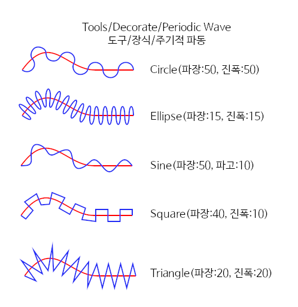
Ribbon using path
ribbon-path-0.1.py
경로 창 문맥 메뉴: Ofnuts/Tools/Ribbon using path..
짧은 설명: None
설명서: http://gimp-path-tools.sourceforge.net/tools.shtml#ribbon-path
설명서와 다름(버그가 있는 것으로 보임). 상당히 느림. 노드(앵커)가 아주 많이 추가됨.
Coil along path
slinky-0.3.py
경로 창 문맥 메뉴: Ofnuts/Decorate/Sine/Coil along path...
짧은 설명: None
설명서: None
상당히 느림. 노드(앵커)가 많이 추가됨.
Decorate/Periodic Wave/Sine이 더 나음
Unclose(열린 경로)
unclose-path-0.1.py
경로 창 문맥 메뉴: Ofnuts/Tools/Unclose
짧은 설명: None
설명서: http://gimp-path-tools.sourceforge.net/tools.shtml#unclose-path
스트로크트 폰트 목록은 Single-line fonts 참조
테스트
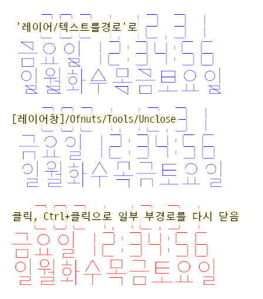
- Digital_0_9_Weekname_Stroked.ttf(Digital_0_9_Weekname.ttf를 스트로크트 폰트로 바꾼 것)를 김프 프로파일 디렉터리의 fonts 폴더에 저장. '0123456789.:/ 일월화수목금토요'만 있는 글꼴. 요일명에 해당하는 글리프에만 닫힌 부경로가 있음
- 다른 일반 글꼴을 사용해서 텍스트 레이어에 '2021.12.31 금요일 12:34:56'나 '0123456789.:/ 일월화수목금토요일'를 쓰고 글꼴을 'Digital_0_9_Weekname_Stroked'으로 변경
- '레이어/텍스트를 경로로'를 실행
- 레이어 창에서 생성된 레이어를 우클릭하고 'Ofnuts/Tools/Unclose'를 실행
생성된 'Unclosed 경로'에서 열린 부경로를 다시 닫으려면,
경로 도구를 선택하고 끝-노드를 클릭하고, 다른 끝-노드 위에서 Ctrl+클릭
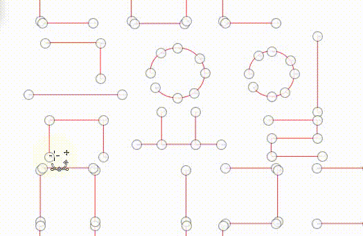
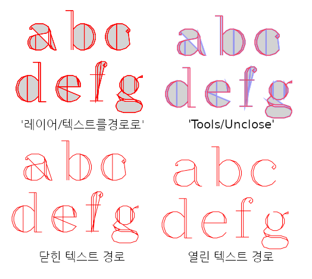
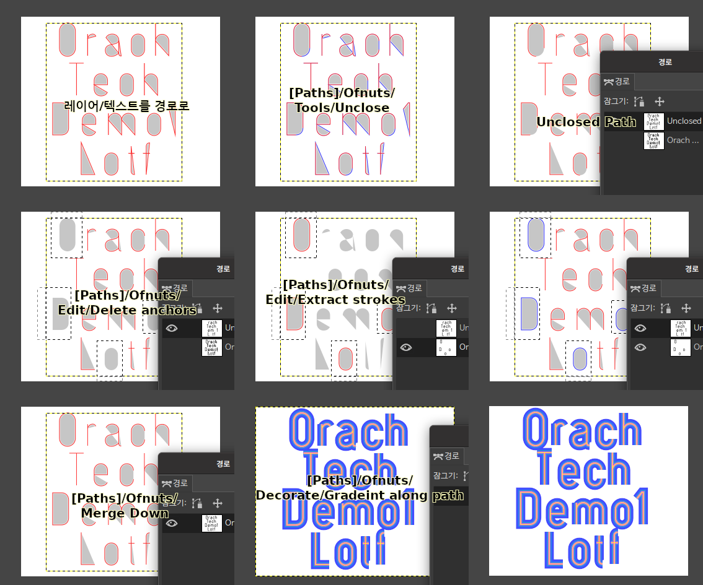